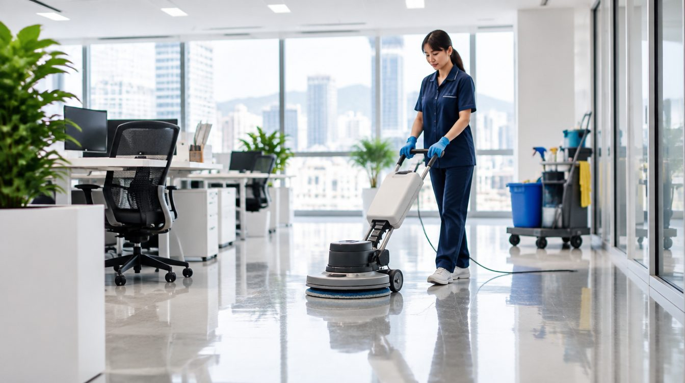
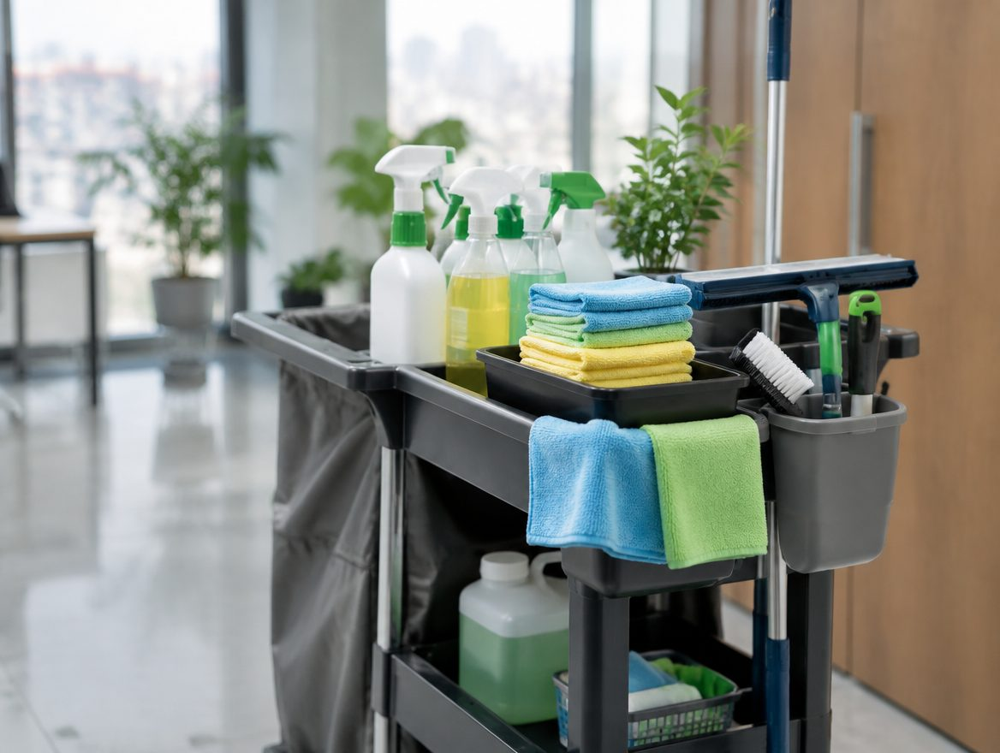

주방과 욕실
오염 상태와 소재, 수납 안쪽 포함 여부를 확인합니다. 분해·특수 작업은 별도 협의가 필요합니다.
같은 평수라도 생활의 흔적은 다릅니다.
공간의 쓰임과 상태에 맞춰 필요한 구역부터 확인하세요.

전후 효과를 주장하는 사진이 아닙니다. 작업 확인 과정을 설명하는 AI 시안 이미지입니다.

오염 구역 · 짐의 상태 · 손상 여부를 함께 확인합니다.
협의한 구역과 남아 있는 유의사항을 확인합니다.
면적·공간 유형·오염 상태·짐 유무·희망 일정을 바탕으로 실제 업체가 견적을 안내합니다. 임의의 예시 가격은 표시하지 않습니다.